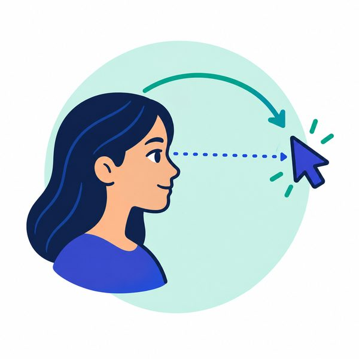
Puntero con la cabeza o los ojos
Mueve el cursor girando la cabeza, mirando hacia donde quieres ir, o con el modo híbrido: los ojos para saltar y la cabeza para afinar.
Winclus es un widget gratuito para Windows que mueve el puntero con tu cabeza o con tus ojos y hace clic con un parpadeo o un gesto. Solo necesitas una cámara web.
Gratis y de código abierto. Sin registro, sin cuenta y sin enviar tu imagen a ningún servidor: todo se procesa en tu equipo.
Winclus está pensado para personas con discapacidades o dificultades motoras que no pueden usar un ratón o un teclado convencional. Todo el control sale de tu cara: la cámara te ve, el puntero te sigue y un gesto hace el clic.
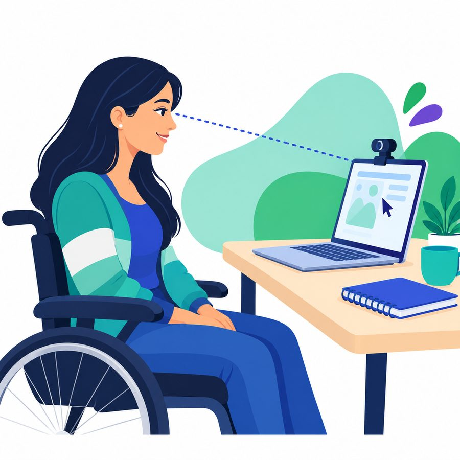

Mueve el cursor girando la cabeza, mirando hacia donde quieres ir, o con el modo híbrido: los ojos para saltar y la cabeza para afinar.
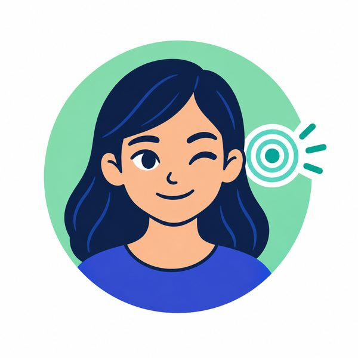
Parpadeo, abrir la boca, levantar las cejas o quedarte quieto sobre un botón. Cada gesto se ajusta a lo que tú puedes hacer con comodidad.
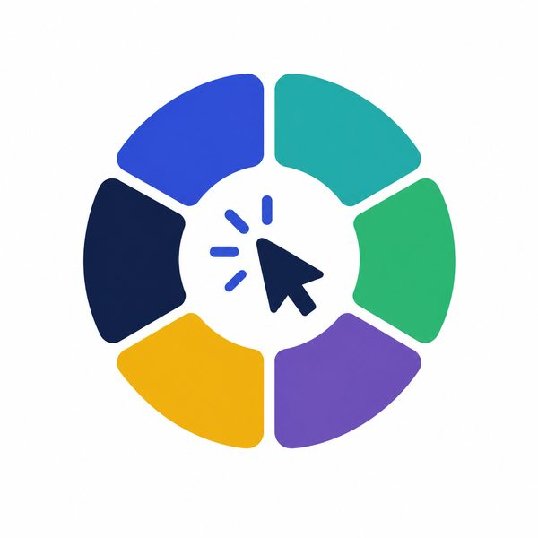
Cierra los ojos un momento y aparece un anillo con clic derecho, doble clic, arrastrar, rueda, teclado y pausa. Sin manos.
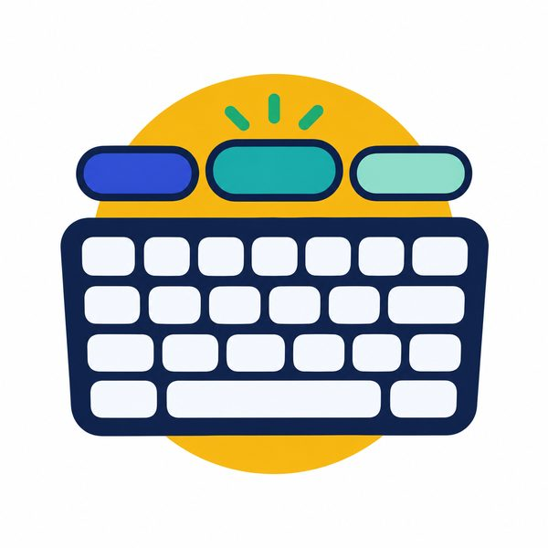
Escribe en cualquier programa con un teclado grande y sugerencias de palabras en español que aprenden de ti.
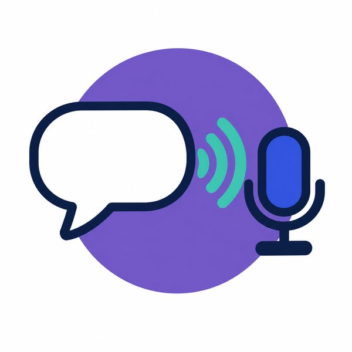
Winclus puede leer en voz alta frases que dejas preparadas: pedir ayuda, saludar, responder. Útil si hablar te cuesta.
Dile lo que quieres, como «abre el correo» o «escribe hola a Ana», y el asistente lo hace por ti paso a paso, incluso sin conexión.
No hace falta instalar nada más ni configurar cuentas. Winclus se calibra solo mientras lo usas.
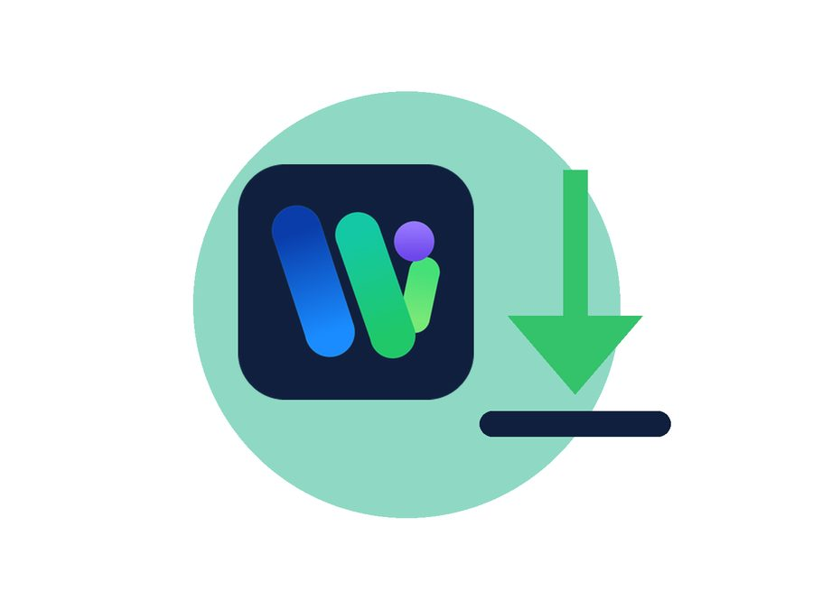
Te hacemos llegar Winclus y lo abres: aparece como una ventana pequeña que puedes dejar a un lado.
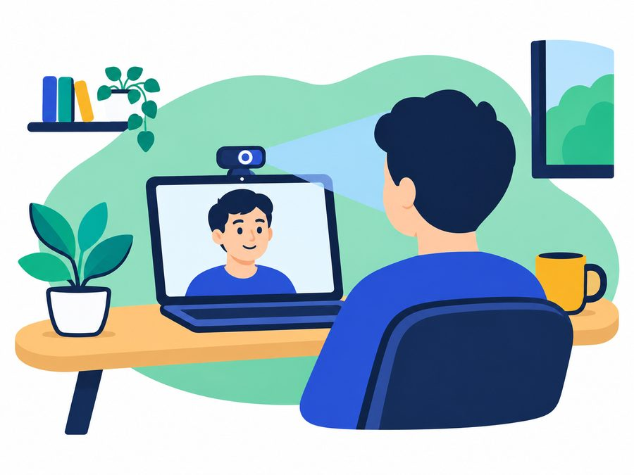
Elige tu cámara web y ponte frente a ella. Mueve la cabeza o mira la pantalla: el puntero te sigue.
Parpadea para hacer clic. Con cada clic, Winclus aprende tu forma de mirar y afina la puntería sin que tengas que calibrar.
Winclus cubre diez necesidades distintas, en el ordenador y en cualquier página web. Cada perfil se guarda y se puede exportar para llevarlo a otro equipo, a la escuela o al trabajo.
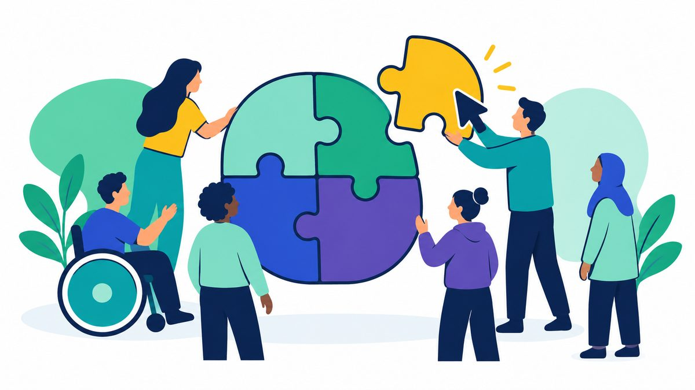
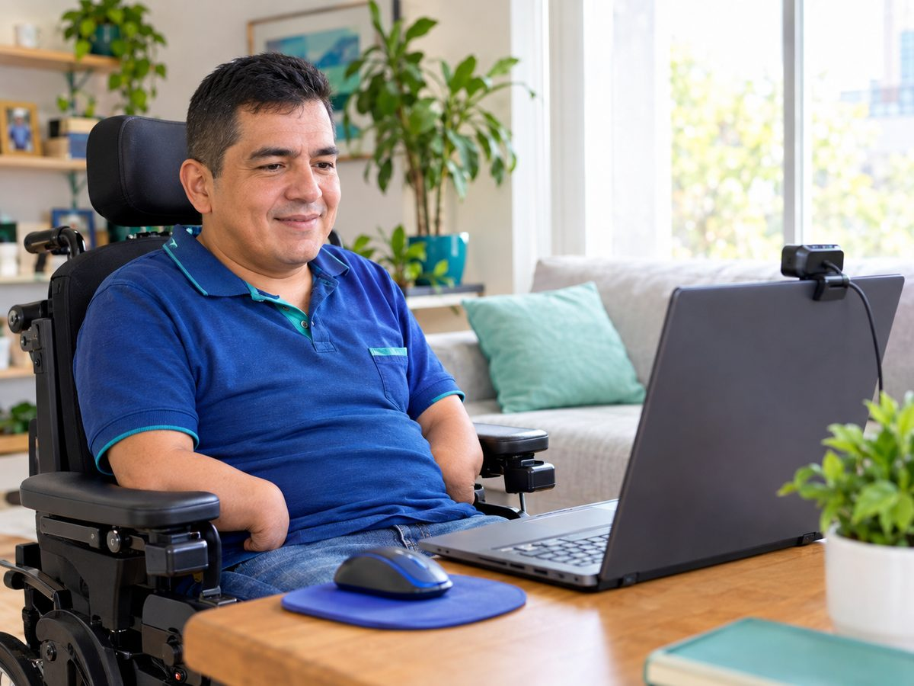
Lesiones medulares, ELA, distrofias, parálisis cerebral, artritis avanzada o amputaciones. El control sale de la cabeza y de los ojos.
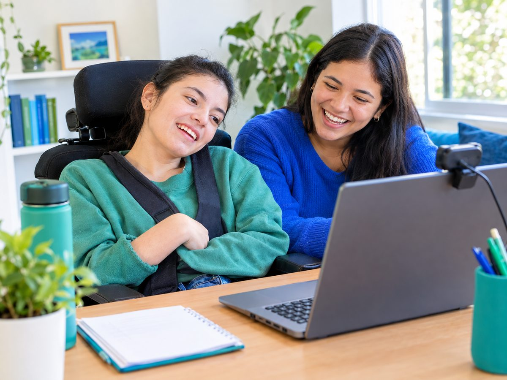
Suavizado ajustable, imán a los botones y una lupa para afinar. El puntero se mantiene estable aunque la cabeza no lo esté.
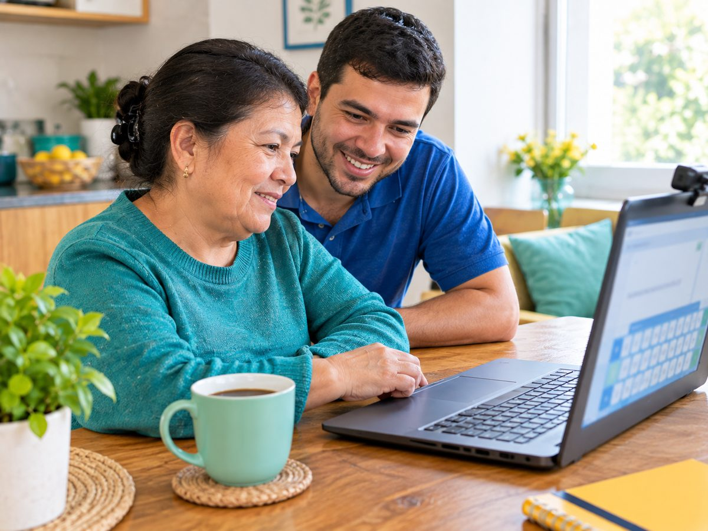
El teclado en pantalla y las frases guardadas con voz permiten comunicarse por escrito o en voz alta.
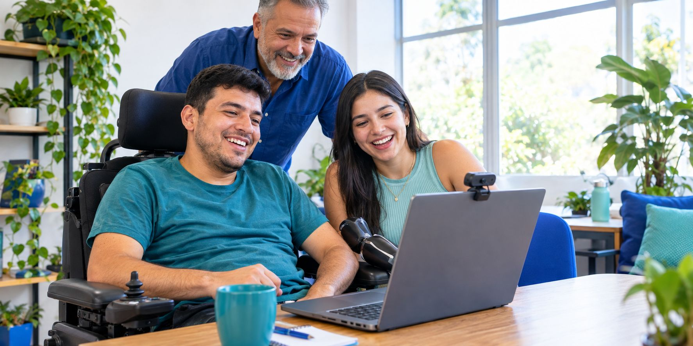
Un mismo equipo puede tener varios perfiles. Quien acompaña configura una vez y la persona usa Winclus sola cada día.
¿Quieres Winclus para ti, para un familiar, para tu centro o para tu página web? Escríbenos y te contamos cómo empezar, sin compromiso.
Escríbenos a hola@winclus.comRespondemos en español y te acompañamos en la puesta en marcha.
Sí. Es software libre con licencia Apache 2.0. Puedes usarlo, copiarlo y compartirlo sin pagar nada. Nace de Project Gameface, de Google, adaptado y ampliado en español.
No. La cámara se procesa en tu equipo y no se guarda ni se envía ningún vídeo. Winclus funciona sin conexión a internet.
No es obligatorio. Winclus aprende de cada clic que haces y va mejorando la puntería por sí solo. Si quieres, hay una calibración guiada de un minuto para afinar más.
Sí, en la mayoría de los casos. Ayuda que no haya reflejos fuertes en los cristales, por eso conviene luz de frente y no a la espalda.
Sí. Cada perfil se exporta a un archivo .winclus con tus gestos, velocidades y lo aprendido, y se importa en otro ordenador en un clic.
No. Winclus es una herramienta de accesibilidad para usar el ordenador. No diagnostica ni trata ninguna condición.